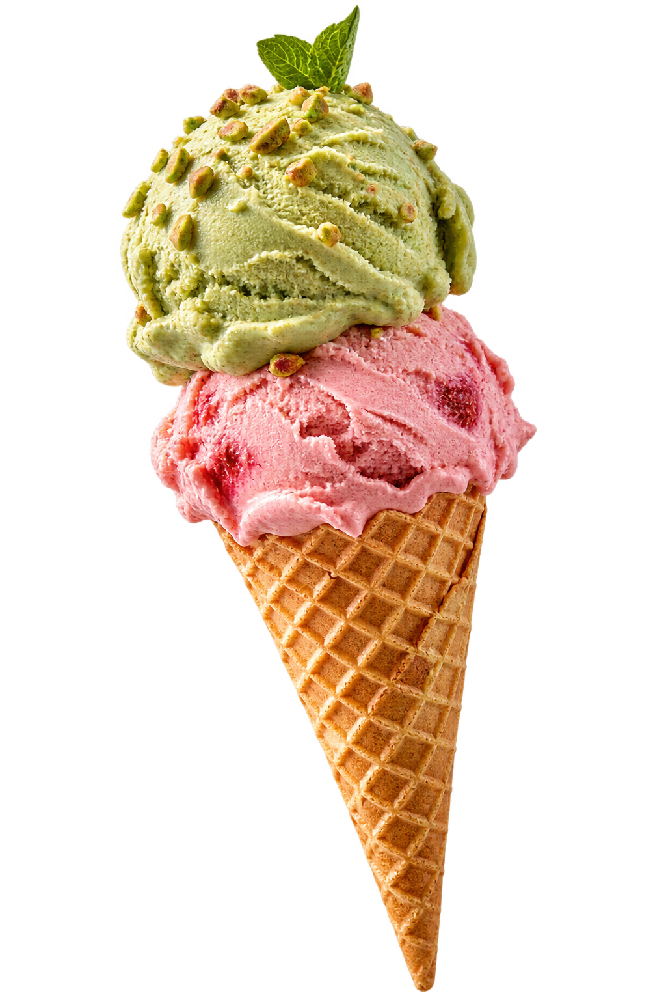
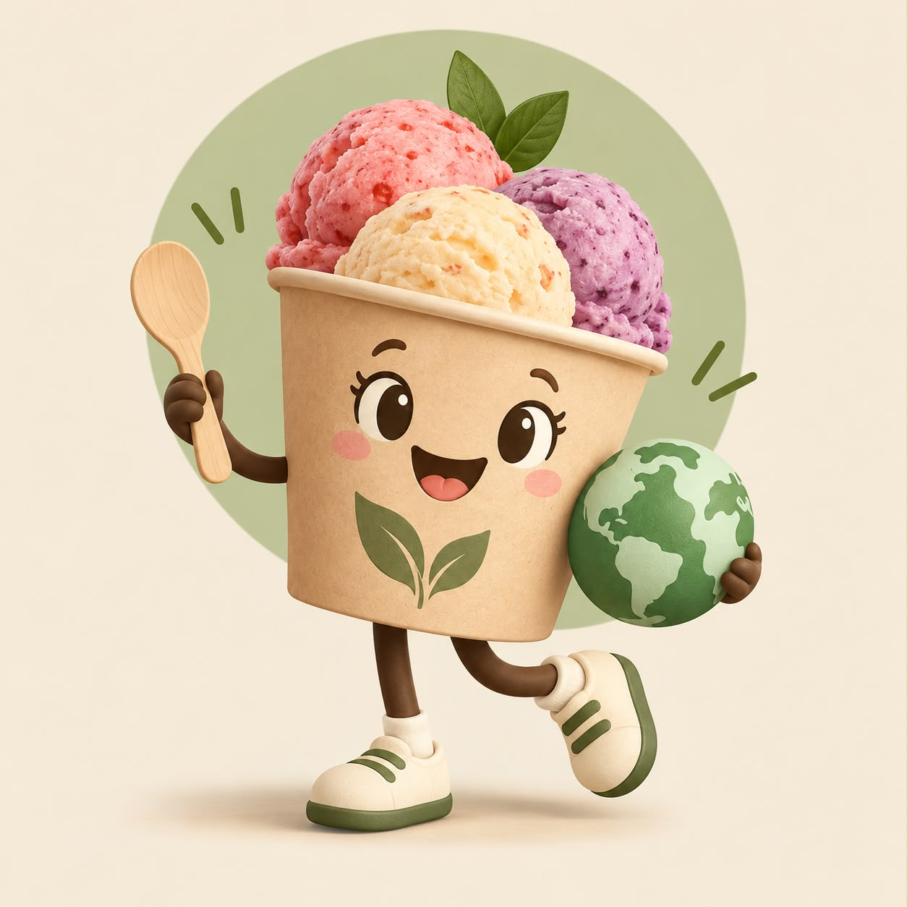

01SS
PROYECTO COMERCIAL 2026 / EQUIPO 33
ReGelato.
Heladería artesanal.
Economía circular.
Frutas frescas y maduras, productores locales
y una nueva mirada sobre el helado.
Fundamentos de Marketing
Facultad de Ciencias Económicas · UNCuyo

El cambio también
puede ser delicioso.
UNA ILUSTRACIÓN DE LO QUE IMAGINAMOS
puede ser delicioso.
↓ SEGUÍ EL RECORRIDOMENDOZA, ARGENTINA ✳ UNA IDEA CON FUTURO
01 LAS PERSONAS DETRÁS
Conocé al
Equipo 33.
Un proyecto compartido.
Una nueva manera de mirar
lo que ya tenemos.
Scaffidi Resa
02GV
Grimaldi Ferro
Valentina
03DF
Duarte Frank
Francisco
04BG
Bucca Luna
Guadalupe
05ML
Marin Sendra
Lucila
06YS
Yanzon
Sofia
02 NUESTRA IDENTIDAD
ReGelato.
Una nueva mirada.
- Nombre del grupo · propuesta
- ReGelato
- Nuestra mascota
- Copito
Tierno, fácil de recordar y con la vibra clásica de algo frío y delicioso.
Explorá nuestros lemas
DOS IDEAS, UNA MISMA ESENCIA
Lemas en evaluación
03 EL PROYECTO COMERCIAL
Una nueva vida.
Un nuevo sabor.
NOMBRE DEL PROYECTOReGelato — Heladería Circular
Emprendimiento gastronómico sustentable basado en la elaboración y comercialización de helados artesanales mediante el aprovechamiento de excedentes alimentarios.
DE INGREDIENTE A HELADO
Todo empieza con otra mirada.
Frutas frescas y maduras, aptas para el consumo, descartadas por razones estéticas o de sobrestock.
RECORRIDO CONCEPTUAL04 IDEA DEL NEGOCIO
La fruta cambia.
El valor queda.
ReGelato es un proyecto de heladería artesanal y sustentable que aplica los principios de la economía circular a la gastronomía dulce.
Proponemos elaborar helados de alta calidad aprovechando excedentes de frutas frescas y maduras de productores locales y comercios de cercanía: frutas que, de otro modo, serían descartadas por su apariencia o por sobrestock.
Imperfectas por fuera.
Valiosas por dentro.
Aprovechamos frutas imperfectas, aptas para el consumo, que suelen descartarse por razones estéticas. El rescate de alimentos —upcycling— es el punto de partida de la elaboración principal.
Una segunda
transformación.
La propuesta reincorpora los excedentes y las pulpas sobrantes en la creación de nuevos sabores e infusiones, para recuperar su valor y reducir el desperdicio de alimentos.
El envase vuelve.
El ciclo sigue.
Planteamos eliminar el poliestireno expandido (telgopor) y los plásticos de un solo uso mediante envases térmicos reutilizables de recarga —refill— e insumos 100% compostables.
LA ALTERNATIVA QUE BUSCAMOS OFRECERMás fruta.
Más fruta.
Nutrición consciente.
Una alternativa deliciosa, saludable y 100% natural, libre de conservantes, con opciones veganas y bajas en azúcar. Helados más saludables y libres de ultraprocesados, junto con un consumo responsable en la comunidad.
05 NUESTRO OBJETIVO PRINCIPAL
El valor
vuelve a circular.
“Desarrollar una heladería artesanal sustentable que aproveche excedentes alimentarios aptos para el consumo provenientes de comercios gastronómicos de Mendoza, transformándolos en productos de calidad y generando un impacto positivo en las dimensiones económica, social y ambiental”.Descubrí las tres dimensiones
UNA MIRADA
CIRCULAR
CIRCULAR
01 — Origen local
Productores locales y comercios de cercanía como origen de frutas frescas y maduras aptas para el consumo.
TOCÁ CADA ETAPA PARA EXPLORAR EL CICLO
VISIÓN PARA EL PRIMER AÑOUna ambición
METAS PROPUESTAS
Una ambición
que nos mueve.
METAS PROPUESTASLiderar la transformación sustentable y social en el rubro heladero mediante un modelo de residuo cero y nutrición consciente, aprovechando excedentes alimentarios aptos para el consumo provenientes de comercios gastronómicos de Mendoza y promoviendo el acceso a helados más saludables y libres de ultraprocesados para la comunidad, mientras evitamos el desperdicio de toneladas de fruta y reducimos al 100% la generación de empaques descartables durante el primer año de operaciones.
Es una aspiración del proyecto, todavía en definición. La cantidad de fruta a recuperar y la viabilidad de la meta de 100% de reducción deben validarse; no son resultados alcanzados.
06 NUESTRO TRIPLE IMPACTO
Un helado.
Tres formas de sumar.
Tres dimensiones conectadas por una misma idea.
EL MODELO QUE NOS CONECTA
Cuando una parte suma,
el círculo crece.
Impacto económico
Recuperar valor también es parte de una mirada circular.
Estas dimensiones expresan los objetivos del proyecto. No representan resultados medidos.
EL FUTURO TAMBIÉN SE IMAGINA DE A UNA BOCHA
Démosle
otra vuelta.
ReGelato · Heladería Circular · Equipo N.º 33
Volver al comienzo ↑